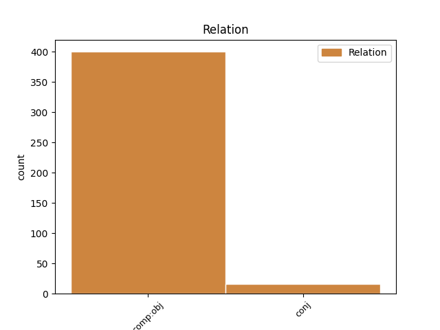
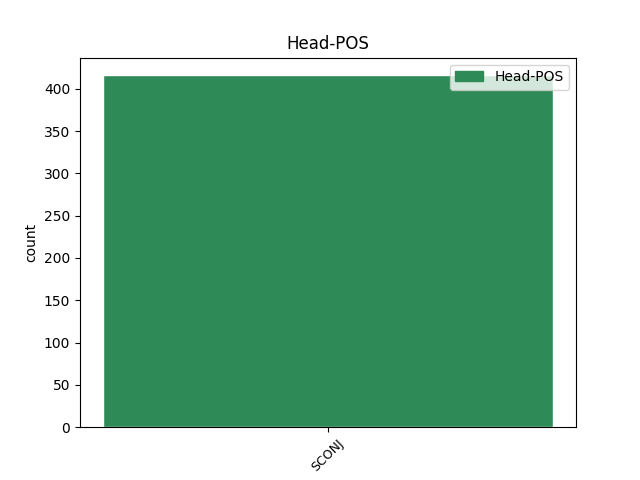
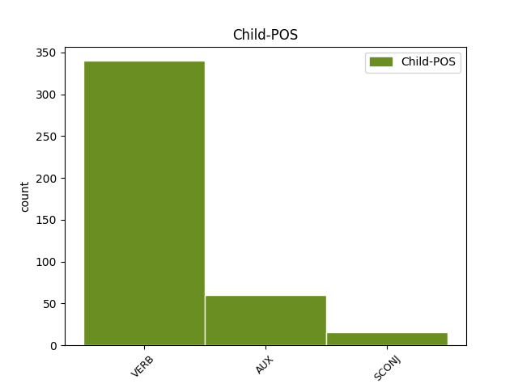

Distribution of features within this leaf



Agreement Rules sorted by frequency.
- When the dependent token is the conjunct(conj) of the head token, and the head token is SCONJ
1 Еще _ _ _ _ 0 _ _ _
2 недавно _ _ _ _ 0 _ _ _
3 Павлов _ _ _ _ 0 _ _ _
4 умел _ _ _ _ 0 _ _ _
5 жить _ _ _ _ 0 _ _ _
6 так, _ _ _ _ 0 _ _ _
7 ЧТОБЫ чтобы SCONJ _ Mood=Cnd 0 _ _ _
8 одни _ _ _ _ 0 _ _ _
9 обязанности _ _ _ _ 0 _ _ _
10 не _ _ _ _ 0 _ _ _
11 были _ _ _ _ 0 _ _ _
12 в _ _ _ _ 0 _ _ _
13 ущерб _ _ _ _ 0 _ _ _
14 другим _ _ _ _ 0 _ _ _
15 чтобы чтобы SCONJ _ Mood=Cnd 7 conj _ _
16 любовь _ _ _ _ 0 _ _ _
17 к _ _ _ _ 0 _ _ _
18 семье _ _ _ _ 0 _ _ _
19 не _ _ _ _ 0 _ _ _
20 мешала _ _ _ _ 0 _ _ _
21 работе _ _ _ _ 0 _ _ _
22 а _ _ _ _ 0 _ _ _
23 увлеченность _ _ _ _ 0 _ _ _
24 работой _ _ _ _ 0 _ _ _
25 - _ _ _ _ 0 _ _ _
26 он _ _ _ _ 0 _ _ _
27 работал _ _ _ _ 0 _ _ _
28 тогда _ _ _ _ 0 _ _ _
29 на _ _ _ _ 0 _ _ _
30 строительстве _ _ _ _ 0 _ _ _
31 гигантской _ _ _ _ 0 _ _ _
32 гостиницы _ _ _ _ 0 _ _ _
33 в _ _ _ _ 0 _ _ _
34 Зарядье _ _ _ _ 0 _ _ _
35 - _ _ _ _ 0 _ _ _
36 не _ _ _ _ 0 _ _ _
37 вредила _ _ _ _ 0 _ _ _
38 семье _ _ _ _ 0 _ _ _
39 . _ _ _ _ 0 _ _ _
Disagree Examples:
1 Муж _ _ _ _ 0 _ _ _
2 настоял _ _ _ _ 0 _ _ _
3 , _ _ _ _ 0 _ _ _
4 чтобы чтобы SCONJ _ Mood=Cnd 0 _ _ _
5 она _ _ _ _ 0 _ _ _
6 бросила бросить VERB _ Aspect=Perf|Gender=Fem|Mood=Ind|Number=Sing|Tense=Past|VerbForm=Fin|Voice=Act 4 comp:obj _ _
7 работу _ _ _ _ 0 _ _ _
8 . _ _ _ _ 0 _ _ _
1 Он _ _ _ _ 0 _ _ _
2 очень _ _ _ _ 0 _ _ _
3 любил _ _ _ _ 0 _ _ _
4 , _ _ _ _ 0 _ _ _
5 чтобы чтобы SCONJ _ Mood=Cnd 0 _ _ _
6 на _ _ _ _ 0 _ _ _
7 письменном _ _ _ _ 0 _ _ _
8 столе _ _ _ _ 0 _ _ _
9 всегда _ _ _ _ 0 _ _ _
10 был быть AUX _ Aspect=Imp|Gender=Masc|Mood=Ind|Number=Sing|Tense=Past|VerbForm=Fin|Voice=Act 5 comp:obj _ _
11 полный _ _ _ _ 0 _ _ _
12 , _ _ _ _ 0 _ _ _
13 можно _ _ _ _ 0 _ _ _
14 даже _ _ _ _ 0 _ _ _
15 сказать _ _ _ _ 0 _ _ _
16 , _ _ _ _ 0 _ _ _
17 блестящий _ _ _ _ 0 _ _ _
18 порядок _ _ _ _ 0 _ _ _
19 . _ _ _ _ 0 _ _ _
1 Одного _ _ _ _ 0 _ _ _
2 только _ _ _ _ 0 _ _ _
3 жаждал _ _ _ _ 0 _ _ _
4 он _ _ _ _ 0 _ _ _
5 сейчас _ _ _ _ 0 _ _ _
6 страстно _ _ _ _ 0 _ _ _
7 : _ _ _ _ 0 _ _ _
8 чтобы чтобы SCONJ _ Mood=Cnd 0 _ _ _
9 разведчик _ _ _ _ 0 _ _ _
10 замолчал замолчать VERB _ Aspect=Perf|Gender=Masc|Mood=Ind|Number=Sing|Tense=Past|VerbForm=Fin|Voice=Act 8 comp:obj _ SpaceAfter=No
11 , _ _ _ _ 0 _ _ _
12 замолчал _ _ _ _ 0 _ _ _
13 наконец _ _ _ _ 0 _ _ _
14 , _ _ _ _ 0 _ _ _
15 не _ _ _ _ 0 _ _ _
16 стонал _ _ _ _ 0 _ _ _
17 так _ _ _ _ 0 _ _ _
18 громко _ _ _ _ 0 _ _ _
19 . _ _ _ _ 0 _ _ _
1 Сейчас _ _ _ _ 0 _ _ _
2 же _ _ _ _ 0 _ _ _
3 мы _ _ _ _ 0 _ _ _
4 набрали _ _ _ _ 0 _ _ _
5 жизненный _ _ _ _ 0 _ _ _
6 опыт _ _ _ _ 0 _ _ _
7 и _ _ _ _ 0 _ _ _
8 постараемся _ _ _ _ 0 _ _ _
9 сделать _ _ _ _ 0 _ _ _
10 , _ _ _ _ 0 _ _ _
11 чтобы чтобы SCONJ _ Mood=Cnd 0 _ _ _
12 при _ _ _ _ 0 _ _ _
13 появлении _ _ _ _ 0 _ _ _
14 коммерческих _ _ _ _ 0 _ _ _
15 изделий _ _ _ _ 0 _ _ _
16 никто _ _ _ _ 0 _ _ _
17 не _ _ _ _ 0 _ _ _
18 оказался оказаться VERB _ Aspect=Perf|Gender=Masc|Mood=Ind|Number=Sing|Tense=Past|VerbForm=Fin|Voice=Mid 11 comp:obj _ _
19 в _ _ _ _ 0 _ _ _
20 проигрыше _ _ _ _ 0 _ _ _
21 . _ _ _ _ 0 _ _ _
1 По _ _ _ _ 0 _ _ _
2 математическим _ _ _ _ 0 _ _ _
3 расчетам _ _ _ _ 0 _ _ _
4 Григоряна _ _ _ _ 0 _ _ _
5 , _ _ _ _ 0 _ _ _
6 для _ _ _ _ 0 _ _ _
7 того _ _ _ _ 0 _ _ _
8 чтобы чтобы SCONJ _ Mood=Cnd 0 _ _ _
9 человечество _ _ _ _ 0 _ _ _
10 могло мочь VERB _ Aspect=Imp|Gender=Neut|Mood=Ind|Number=Sing|Tense=Past|VerbForm=Fin|Voice=Act 8 comp:obj _ _
11 вписаться _ _ _ _ 0 _ _ _
12 в _ _ _ _ 0 _ _ _
13 естественные _ _ _ _ 0 _ _ _
14 циклы _ _ _ _ 0 _ _ _
15 биосферы _ _ _ _ 0 _ _ _
16 , _ _ _ _ 0 _ _ _
17 население _ _ _ _ 0 _ _ _
18 планеты _ _ _ _ 0 _ _ _
19 должно _ _ _ _ 0 _ _ _
20 быть _ _ _ _ 0 _ _ _
21 уменьшено _ _ _ _ 0 _ _ _
22 раз _ _ _ _ 0 _ _ _
23 в _ _ _ _ 0 _ _ _
24 десять _ _ _ _ 0 _ _ _
25 . _ _ _ _ 0 _ _ _